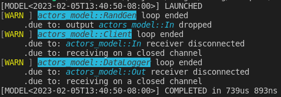
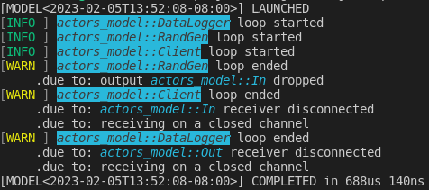

Model
A model is a network of clients connected to each other by pairs of output/input. The actor/client interfaces specify the tasks that are going to be executed and the topology of the network defines the order in which the tasks are executed.
A pair of output/input defines a unique channel with a sender and a receiver. The sender is given to the output and the receiver to the input.
Each actor performs the following task sequentially in a never ending inner loop and asynchronously with respect to the other actors :
- if any inputs, receive inputs & invoke client
gmt_dos_actors::io::Readtrait implementation on each input, - update client state with the client
gmt_dos_actors::io::Updatetrait implementation, - if any outputs, invoke the client
gmt_dos_actors::io::Writetrait implementation on each output & send outputs.
The default behavior of an actor is to pause the inner loop both until all the inputs have been received and until all the outputs have been received by other actors.

In the model above, the network topology imposes the following sequence of events (from top to bottom):
| A | B | C | D | |
|---|---|---|---|---|
| 1 | Update | - | - | - |
| 2 | Write::<AB,ABC> | - | - | - |
| 3 | - | Read::<AB,ABC> | Read::<ABC> | - |
| 4 | Update | - | Update | - |
| 5 | Write::<AB,ABC> | - | Write::<CB,CD> | - |
| 6 | - | Read::<CB> | - | Read::<CD> |
| 7 | - | Update | Read::<ABC> | - |
| 8 | - | Write::<BD1,BD2> | Update | - |
| 9 | - | - | Write::<CB,CD> | Read::<BD1,BD2> |
| 10 | - | Read::<AB,ABC,CB> | - | Update |
| 11 | Update | Update | - | Read::<CD> |
| 12 | ... |
Note that events in the same row may occur simultaneously thanks to the asynchronous nature of the actors.
Laying out the network consists in building actors outputs and relaying them to other actors inputs. A pair of output and input must meet the following requirements:
- the client of the output actor must implement the trait
gmt_dos_actors::io::Write<I> - the client of the input actor must implement the trait
gmt_dos_actors::io::Read<O> IandOmust be of the same type i.e.I=O- the ouput rate
NOmust be equal to the input rateNI(NO=NI)
A model will not compile in any of the above requirements is not met.
For client A that gives:
A.add_output().build::<AB>().into_input(&mut B);
A.add_output().multiplex(2).build::<ABC>()
.into_input(&mut B)
.into_input(&mut C);As illustrated above, an output can be multiplexed and sent to multiple inputs.
Then for B:
B.add_output().build::<BD1>().into_input(&mut D);
B.add_output().build::<BD2>().into_input(&mut D);and C :
C.add_output().build::<CB>().into_input(&mut B);
C.add_output().build::<CD>().into_input(&mut D);Per default, an actor inner loop is blocked until all its outputs have been read by the associated inputs as a guarantee that the data has been effectively received.
This is not always necessary, particulary for a client that acts as a data sink like D.
The links to D can be rewritten:
B.add_output().unbounded().build::<BD1>().into_input(&mut D);
B.add_output().unbounded().build::<BD2>().into_input(&mut D);
C.add_output().unbounded().build::<CD>().into_input(&mut D);and the outputs BD1, BD2 and CD won't block their actors inner loop anymore.
Once all the connections have been set-up, we can assemble the actors into a model:
let mut model = Model::new(vec![Box::new(A),Box::new(B),Box::new(C),Box::new(D)]);check the model for errors, run it and wait for it to finish:
model.check()?.run().await?;Note that the run method cannot be invoked on an unchecked model.
The methods that can be called upon Model depend on the value of the Model State generic type parameter.
Some method performs a state transition giving access to other methods.
The model State table shows from which state a Model method is called and in which state the model is transitioned to:
| Method | From | To |
|---|---|---|
Model::new | Unknown | Unknown |
Model::check | Unknown | Ready |
Model::run | Ready | Running |
Model::await | Running | Completed |
Model::name | Unknown | Unknown |
Model::add | Unknown | Unknown |
Model::flowchart | Unknown | Unknown |
Model::flowchart | Ready | Ready |
A flow chart of the model can be obtained with the flowchart method.
Each client is identified by either its type or the actor's name if one was given.
Combining all the Model methods in a single call gives:
Model::new(vec![Box::new(A),
Box::new(B),
Box::new(C),
Box::new(D)])
.flowchart()
.check()?
.run()
.await?;The flowchart is written to the file integrated_model.dot.svg.
The boilerplate code used for model declaration:
Model::new(vec![Box::new(...),vec![Box::new(...),...])can be advantageously replaced with the Rust macro model!, e.g.
model!(A,B,C,D)
.flowchart()
.check()?
.run()
.await?;When an output detects that the data the client has written to its buffer is None, it closes the channel it belongs to and return an error to the actor that forces the actor to shut down.
When an actor shuts down its inputs and outputs close the channels they are part of. A closed channel also generates an error that is caught by the actors at both end of the channel and forces these actors to also shut down and so, by a domino effect, all the actors are terminated and the model gracefully comes to an end.
Working example
Building upon the example in the previous section, lets add 2 more clients:
- a random generator
struct RandGen {
data: Vec<i32>,
}
impl RandGen {
pub fn new(n_sample: usize) -> Self {
let mut data = vec![0i32; n_sample];
let mut rng = WyRand::new();
rng.fill(&mut data);
Self { data }
}
}
impl Update for RandGen {}
impl Write<In> for RandGen {
fn write(&mut self) -> Option<Data<In>> {
self.data.pop().map(|val| Data::new(val))
}
}- a data logger
#[derive(Default)]
struct DataLogger {
data: Vec<f32>,
}
impl Update for DataLogger {}
impl Read<Out> for DataLogger {
fn read(&mut self, data: Data<Out>) {
self.data.push(*data);
}
}With all the clients defined with an actor/client interface, the actors are instanciated with
let mut source = Initiator::<_>::from(RandGen::new(1_000_000));
let mut filter = Actor::<_>::from(Client::default());
let mut log = Terminator::<_>::from(DataLogger::default());Each actor requires 3 generic type parameters: the client type and 2 constants: the inputs and outputs sampling rates. The inputs rate is zero if the actor has no inputs and the outputs rate is zero if the actor has no outputs. The default sampling rate for inputs and outputs is 1.
The next step is to build the network. The links between actors are established by successively creating channels between an actor output and the input of another actor, both the output and the input must have been given the same type and the same sampling rate.
source.add_output().build::<In>().into_input(&mut filter)?;
filter
.add_output()
.unbounded()
.build::<Out>()
.into_input(&mut log)?;Now the model can be assembled, charted, checked for errors and run:
model!(source, filter, log)
.flowchart()
.check()?
.run()
.await?;
The model stop itself when the data from the RandGen client is exhausted.
By setting a logger at the begining of the main application, insight into the behavior of the model can be gathered. For example, setting the env_logger crate with
env_logger::builder()
.format_timestamp(None)
.format_target(false)
.init();and running the application with the RUST_LOG environment variable:
RUST_LOG=warn cargo run ...
outputs the following:

Setting RUST_LOG to info instead gives
RUST_LOG=info cargo run ...

and with
RUST_LOG=debug cargo run ...

Debug information is displayed only for application run in debug mode.